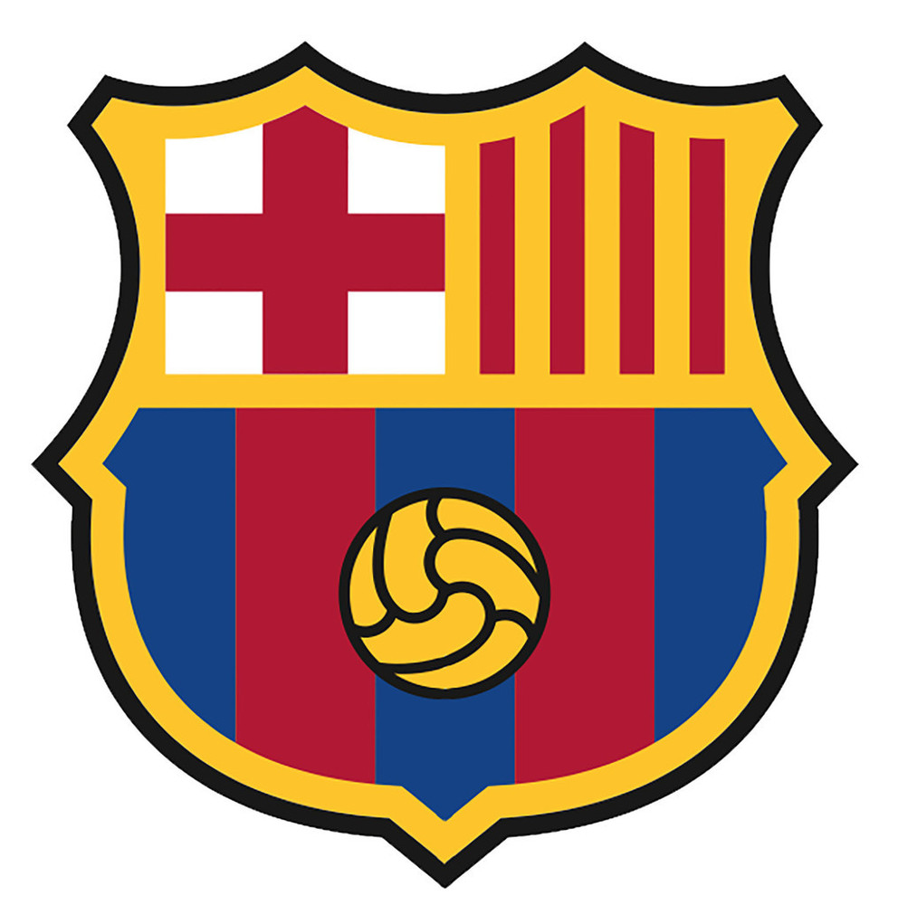
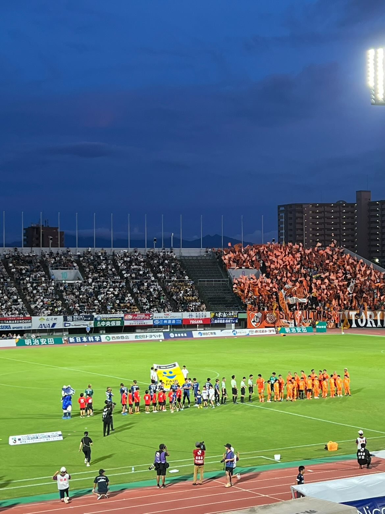

HOME
地元
趣味
行きたい国
好きな季節
高校生活
趣味
サッカー観戦
私の趣味は、サッカー観戦です。
特に、スペインのプロサッカーチームであるＦＣバルセロナの試合を多く見ています。
小学５年生の時にバルセロナの試合を見たのがきっかけでサッカーを見ることが趣味となり、同時にバルセロナを応援するようになりました。


現地観戦
私は３試合鹿児島県のプロサッカーチームである鹿児島ユナイテッドFCを現地で観戦しました。
現地観戦は、画面越しでは味わえない臨場感やサポーターの熱を感じることができます。
また、スタグルと呼ばれる地元の食材などを使ったグルメを食べることができます。